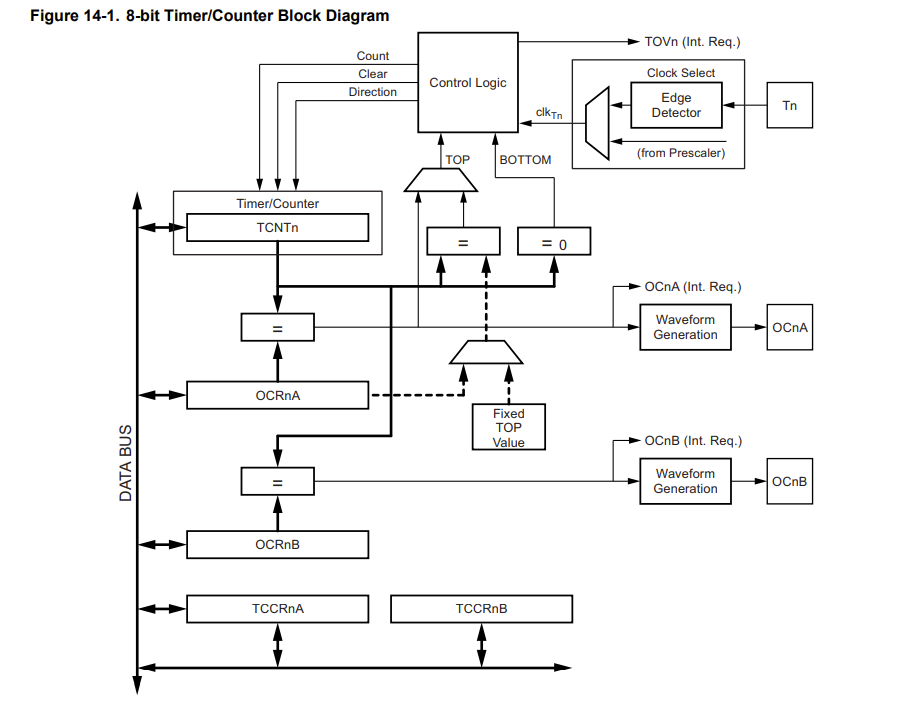

前言
本文主要内容在于对Arduino Nano的定时器0的探索，注意到Arduino Nano的芯片型号为ATmega328p，而网上并没有这方面的数据手册翻译
所以本人将这部分内容进行一定的翻译并进行一定程度的解释
手册正文
TIMER0概述
ATmega328p芯片共有三个定时器，分别为TIMER0，TIMER1，TIMER2，要注意TIMER0作为一个8位定时器，许多delay函数都依赖它
TIMER0除了常规的定时中断功能外，还可操纵引脚输出PWM信号，查阅数据手册得知，TIMER0可操控的引脚为Pin6(OC0A)和Pin5(OC0B)
8-bit Timer/Counter0 with PWM
功能特性
- 两个独立的输出比较单元
- 双缓冲区的输出比较寄存器
- 当值匹配时自动清空计时器（自动重装载）
- 排除小错误，自动修正相位的PWM输出
- 可变的PWM周期
- 频率发生器
- 三个独立的中断源（TOV0，OCF0A，OCF0B）
概述
TIMER0是一个通用的八位计时器，拥有两个独立的输出比较单元和PWM外设。也可用于准确的程序运行计时（事件管理）和波形生成
下图是一个八位定时器的示意图

PRTIM0位必须被设置为0才能启动TIMER/COUNTER0模组
约定与定义
以下给出一些约定的符号，便于之后的理解